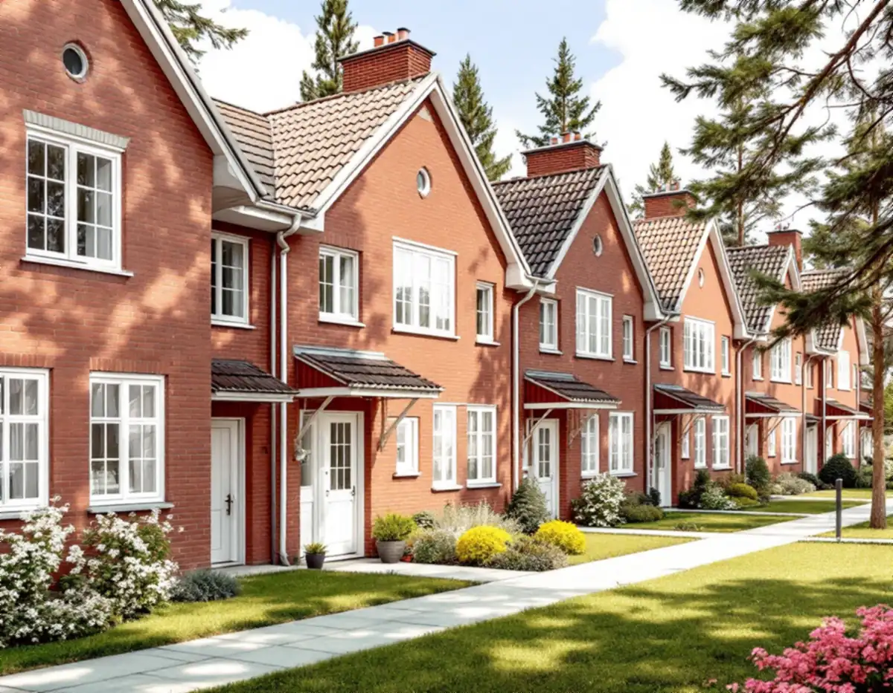
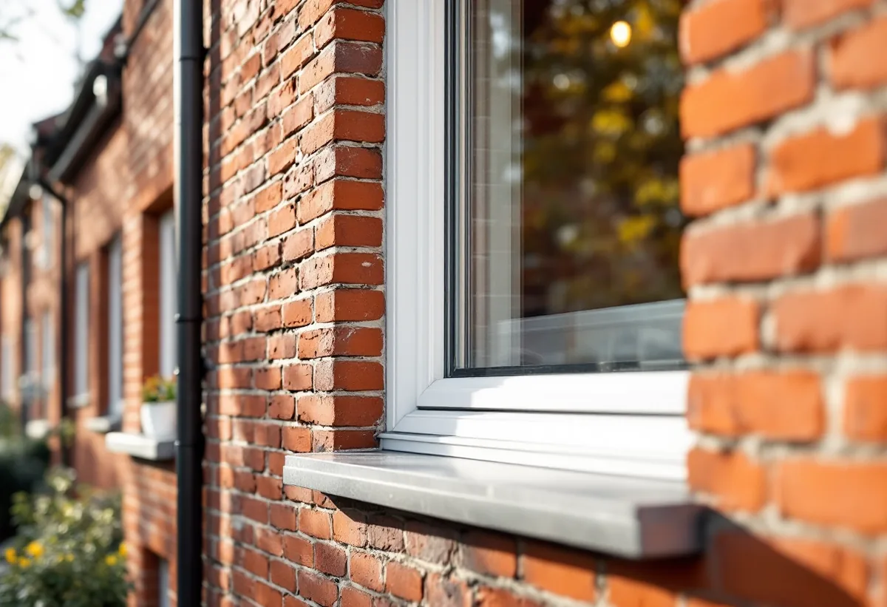
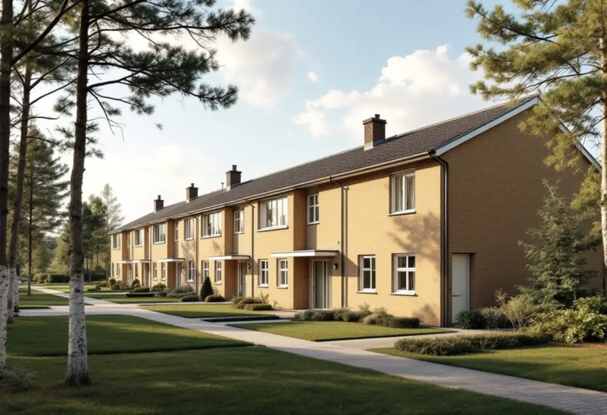

Platsbesök
Gratis besök där vi mäter och fotograferar fönstren.
I Vällingby–Råcksta räknas de ursprungliga husens fönster till det som gör riksintresset värdefullt. För radhus och kedjehus där är ett fönsterbyte därför både en fråga om bygglov och om föreningen. Geal Entreprenad AB byter fönster i Vällingby och tar fram underlaget till staden och styrelsen.

Översiktsplanens riksintressedel beskriver Vällingby–Råcksta som landets första ABC-stad, utbyggd under 1950-talet med radhus och småhus längst ut från centrum. Bland de värdebärande karaktärsdragen räknas de ursprungliga husens gestaltning och byggnadsdetaljer, som fönster, entrépartier, balkonger och räcken.
Stockholms stad kräver bygglov för åtgärder som annars kan vara lovbefriade när huset ligger inom ett riksintresse för kulturmiljövården. Ett fönsterbyte på ett radhus i Vällingby behöver därför prövas, även om det skulle ha varit lovfritt på en villa i ett annat område.

Stadens vägledning Varsam utveckling av småhus- och villaområden nämner flera mycket väl gestaltade radhus- och villaområden i Vällingby, bland dem de kulturhistoriskt synnerligen värdefulla Atlantis i nordost och Omega i nordväst. Om Vällingbys kedjehus skriver vägledningen att de kombinerar moderna volymer med asymmetriska gavlar och en mer traditionell fasadutformning med regelbunden fönstersättning och material som tegel och puts.
Riksintressedelen beskriver också det sociala programmet bakom stadsdelen, med tankar om en blandad befolkning och lättillgänglighet, och dokumentet konstaterar att folkmängden i Vällingby–Råcksta efter 1960-talet har minskat kraftigt till knappt 15 000 invånare. Staden vill att stadsdelen ska utvecklas med fler invånare, men nya tillägg ska ha samma höga kvalitet på utformningen som ursprungsbebyggelsen. Den regelbundna fönstersättningen är det som syns när man går längs en gata med likadana hus. Vi föreslår därför fönster som behåller samma indelning, kulör och läge i fasaden, och tar gärna fram ett gemensamt förslag för hela längan, så att husen fortsätter att se ut som en helhet.
Stadens områdesfakta för 2025 räknar 449 småhus i Vällingby, varav 228 med bostadsrätt och 220 med äganderätt. I Råcksta är 91 småhus bostadsrätter och 299 äganderätter. Bor du i ett radhus med bostadsrätt avgör föreningens stadgar enligt bostadsrättslagen om fönstren är ditt eller föreningens ansvar.
Skatteverket ger inget rotavdrag för att byta fönster i en bostadsrätt, men för arbete på insidan av befintliga fönster, som att byta glaset i den inre bågen, montera tätningslist eller byta innerfönster och fönsterfoder, när det är sådant du ansvarar för enligt stadgarna. Vi hjälper styrelsen med ett förslag som gäller alla hus i föreningen. Vill du hellre renovera fönstren finns mer under fönsterrenovering i Vällingby.
En ansökan om att byta fönster behöver visa hur de nya fönstren ser ut. Staden beskriver fasadritningen i skala 1:100 och detaljritningen, som visar byggnadsdetaljer som fönster i skala 1:10, 1:20 eller 1:50. Vid enkla ändringar kan ett fotomontage räcka i stället för en fasadritning.
Vi mäter upp de befintliga fönstren, fotograferar fasaden och ritar de nya fönstren med profiler och indelning. Äldre handlingar som stadsbyggnadskontoret har för fastigheten, till exempel ritningar från byggåret, kan enligt staden letas fram och skrivas ut via e-tjänsten Bygg- och plantjänsten, och dem använder vi som utgångspunkt. Underlaget kan användas både i föreningens beslut och i ansökan. Mer om tjänsten finns under fönsterbyte.

Gratis besök där vi mäter och fotograferar fönstren.
Vi går igenom stadgarna och ansvaret med styrelsen.
Fasad- och detaljritning till bygglovet.
Ansökan med vårt underlag.
Fönstren byts hus för hus i längan.
Skötselråd till föreningen och de boende.
För ett radhus eller kedjehus med äganderätt räknar Skatteverket det som rotarbete att reparera eller byta ut fönster och att montera isolerglas. Avdraget är högst 30 procent av arbetskostnaden och högst 50 000 kronor per person och år. Material och resor ger inget avdrag, och Geal drar avdraget direkt på fakturan.
I en bostadsrätt ger själva fönsterbytet inget rotavdrag, men arbete på insidan av fönstren kan ge avdrag om det är ditt ansvar enligt stadgarna.
Antal hus och fönster, om fönstren tillverkas efter mått, indelning och glas, foder och bleck, ritningar till bygglovet och om hela längan byts samtidigt. Efter ett gratis platsbesök får du eller föreningen ett skriftligt kostnadsförslag.
Byta eller renovera fönster.
Fönsterbyte i Stockholm →Takbyte, takbesiktning och plåtarbeten.
Takläggare i Vällingby →Radhusen i riksintresset Vällingby–Råcksta.
Takrenovering i Vällingby →Riksintresset och villaområdena.
Attefallshus i Vällingby →Riksintresset, radhusen och våtzonerna.
Badrumsrenovering i Vällingby →Bygga till i riksintresset.
Byggföretag i Vällingby →Puts från 1950-talet och kulör i riksintresset.
Fasadmålning i Vällingby →Tegel, puts och skivor på tunnelbanestadens hus.
Fasadrenovering i Vällingby →Radhusens fönster.
Fönsterrenovering i Vällingby →Gamla mattor, lim och asbest.
Golvläggare i Vällingby →Lamellgolv, svikt och slitskikt.
Golvslipning i Vällingby →Kök i lägenheter och radhus.
Köksrenovering i Vällingby →Radhus och lägenheter i ABC-staden.
Målare i Vällingby →Takplåt, rännor och beslag i riksintresset.
Plåtslagare i Vällingby →Entréer, dörrar och räcken på radhusen.
Snickare i Vällingby →Kälvesta och husgrupperna.
Takbyte i Vällingby →Väggar från 1950-talet.
Tapetsering i Vällingby →Radhusen, riksintresset och lovet.
Tillbyggnad i Vällingby →ABC-staden, eternit och föreningen.
Totalrenovering i Vällingby →